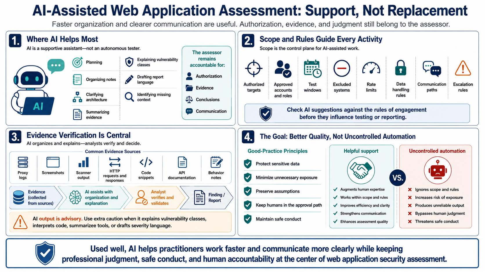

Course Summary and Key Takeaways
Connecting to LMS... Progress: in progress

Narration
AI can accelerate web application assessment, but it does not replace skilled testing. Its best uses are supportive: planning, organizing notes, clarifying architecture, summarizing evidence, explaining vulnerability classes, drafting report language, and helping analysts think through missing context. The assessor remains accountable for authorization, evidence, conclusions, and communication.
Strong workflows keep scope clear. Authorized targets, accounts, roles, test windows, excluded systems, rate limits, data handling rules, communication paths, and escalation rules should guide every AI-assisted activity. AI suggestions should be checked against the rules of engagement before they influence testing or reporting.
Evidence verification is central. Proxy logs, screenshots, scanner output, HTTP requests and responses, code snippets, API documentation, and behavior notes can all support findings, but they must be reviewed by a human. AI output should be treated as advisory, especially when it explains vulnerability classes, interprets code, summarizes tools, or drafts severity language.
The goal is better authorized assessment quality, not uncontrolled automation. Protect sensitive data, minimize unnecessary exposure, preserve assumptions, and keep humans in the approval path. Used well, AI helps practitioners work faster and communicate more clearly while keeping professional judgment and safe conduct at the center of web application security assessment.